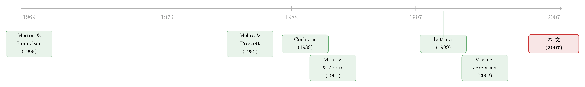

「不买股票」也能是理性的吗？——给参与成本算一笔最省的账
本文读的是 Paiella (2007, Review of Financial Studies)：作者不去直接测量「参与成本」有多高，而是反过来，用揭示偏好给那些不持有股票的家庭估一个「放弃了多少收益」的下界——这个下界又是能够让「不参与」成为理性选择的成本的下界。给定相对风险厌恶不超过 3，股市的平均下界只有消费的 0.7%–3.3%。既然现实中真实的参与成本（光是货币性的就有 2.9%）多半高于这个数，「参与成本假说」就没有被这套检验否定掉。
1 一个谜：为什么三分之二的家庭，碰都不碰股票
先讲一个让经济学家头疼了几十年的小事实。
按照跨期消费选择 (intertemporal consumption choice) 理论里最干净的一条推论，一个追求终身期望效用最大化的人，只要某个资产的预期收益为正，他就应该愿意往里投入哪怕一丁点钱——风险资产也不例外。这个结论早在 Merton (1969) 和 Samuelson (1969) 那里就被严格地写了出来：除非预算约束里有非线性的东西挡着，否则「完全不持有」永远不是最优解。逻辑也很朴素：第一块钱投进去时，承担的风险是二阶小量，赚到的超额收益却是一阶的，天底下没有理由把它白白扔掉。
然而现实呢？Paiella 翻开美国 1982–1995 年的消费者支出调查 (Consumer Expenditure Survey, CEX)，发现超过三分之二的家庭，既不持有股票，也不持有债券。这不是个别现象，换一份数据（Survey of Consumer Finance）也是同样的画面。
于是我们撞上了一个尴尬的局面：理论说人人都该沾一点风险资产，数据却说大多数人对金融市场避之唯恐不及。这个被称为「有限参与」(limited participation) 的事实，本身就是跨期消费模型的一个谜。
学界对它最常见的辩护，是搬出参与成本 (participation costs)：开户、选股、付佣金、花时间盯盘、处理信息……这些非按比例的固定成本，足以劝退一个本来理性的人。听上去很有道理。可问题在于——这些成本绝大部分是观测不到的。于是「参与成本假说」就有了一个致命的软肋：它几乎不可证伪。你说成本高，那到底要多高？说不清楚，这个解释的可信度就只能悬在半空。
「有限参与」这条线索还有另一重意义：资产定价模型的一阶条件只对持有完整组合的家庭成立，所以用全体人口的总量消费去检验 CCAPM 本来就会跑偏（参见 《谁被挡在股市门外，并不重要——重看「有限参与」对股权溢价的真实贡献》）。Mankiw 和 Zeldes (1991)、Vissing-Jørgensen (2002) 等人正是顺着这条线往下走的。但他们都把「有限参与」当成既定事实，没人去解释它本身。
2 一个巧妙的反问：与其去量成本，不如去量「放弃了多少」
成本测不准，检验就无从谈起。绝大多数人到这里就卡住了。
但真正关键的一步在于一次反问：我们确实没法直接观测一个家庭为参与市场要付出多少代价；可我们能不能换个角度，去测量它因为不参与而放弃了多少好处？
这就是本文的全部精髓所在。Paiella 引入一条逻辑链条，把那个观测不到的成本「夹」了起来：
- 一个不持有某资产的家庭，揭示了它宁可不投——这说明对它而言，投资的好处抵不过要付的成本；
- 那么「投资能带来的好处」（即放弃的收益, forgone gains），必然不超过它实际要付的参与成本 \(\delta^*\)；
- 换句话说，放弃的收益是真实参与成本的一个下界。
接着，一个自然的问题是：放弃的收益本身又怎么量？作者再退一步——她只去估这放弃收益的一个下界 \(d\)。于是我们得到一条「下界的下界」：
$$ d \;\le\; \text{forgone gains} \;\le\; \delta^*. $$
这条不起眼的不等式，是整篇文章的发动机。它意味着：只要我能估出 \(d\)，我就给真实参与成本上了一道地板。
然后，反转出现了。这道地板恰好能拿来做一个检验：
- 如果估出来的 \(d\) 非常高，那真实成本必须更高才行——可现实里的参与成本不太可能那么离谱，于是「参与成本假说」站不住；
- 如果估出来的 \(d\) 很低，那任何合理的成本都轻松越过它，假说就没有被否定。
注意这个检验的微妙之处：它不是用来证明假说成立的，而是一次「证伪未遂」。作者自己也坦白，这不是最有力的检验——最有力的做法应当拿成本去比真实的放弃收益，而不是它的下界。但这是最可靠的一个：因为它对家庭的真实信息集、对最优投资行为都做了最保守的让步，得到的 \(d\) 只会偏小，不会偏大。换句话说，如果连这个偏小的地板都高过了现实成本，假说才真的危险；而一旦地板很低，结论就格外稳。
3 框架：把「不投资」翻译成一道不等式
这一节有一点数学，但它正是理解全文的钥匙，值得一步步看清楚。
设想一个环境：家庭有理性预期，偏好在时间上可加可分，每期效用函数 \(U(\cdot)\) 严格递增且凹，主观贴现率为 \(\beta\)。按持有的资产，家庭分三类：既持有风险资产又持有无风险资产的（type 1）、只持有无风险资产的（type 2）、两者都不持有的（type 3）。
现在聚焦一个没有投资某资产的家庭 \(h\)。它把财富 \(W_{h,t}\)（如果有的话）投在一个收益率为 \(R^f_{t+1}\) 的组合里，本期消费 \(c_{h,t}\)，预期下期消费 \(c_{h,t+1}\)。
设想一个反事实：在 \(t\) 时刻，它本来可以付出 \(\delta^*\) 单位消费作为成本，把钱投进这个收益为 \(R_{t+1}\) 的资产，从而把消费路径从 \((c_{h,t}, c_{h,t+1})\) 改成 \((\tilde c_{h,t}, \tilde c_{h,t+1})\)：
$$ \tilde c_{h,t} = c_{h,t} - x^c_{h,t}\, c_{h,t} - \delta^*\, c_{h,t}, $$
$$ \tilde c_{h,t+1} = c_{h,t+1} + x^c_{h,t}\, c_{h,t}\, R_{t+1} + x^w_{h,t}\, W_{h,t}\,(R_{t+1} - R^f_{t+1}). $$
这里 \(x^c_{h,t}\) 和 \(x^w_{h,t}\) 分别是它付完成本之后投入资产的、占当期支出和占财富的比例。第一式说：本期要扣掉投出去的钱和成本；第二式是核心，下期消费里多出了两块收益。我们把第二式拆开来看：
为什么要把消费份额 \(x^c\) 和财富份额 \(x^w\) 分开？因为它们对应两种不同的收益来源。对只持有无风险资产的 type 2 家庭，投资风险资产的好处主要来自赚取股权溢价（那块 \(R-R^f\)）；而对什么都不持有的 type 3 家庭，好处更多来自用资产去跨期平滑消费（那块 \(R\)），尽管要承担一点风险。这个区分让后面估出来的下界含义清晰，不至于把两种性质迥异的收益混成一团烂账。
接着是揭示偏好登场。既然观测到的选择 \((c_{h,t}, c_{h,t+1})\) 是最优的，那任何偏离都不可能在期望上更好：
$$ E_t\{U(\tilde c_{h,t}) + \beta U(\tilde c_{h,t+1})\} \;\le\; E_t\{U(c_{h,t}) + \beta U(c_{h,t+1})\}. $$
这就是 (3) 式。它说的是：扣掉成本 \(\delta^*\) 之后，偏离观测路径的期望效用增益是非正的——这笔投资「不值得做」。为方便，把偏离带来的效用增益记成一个函数：
$$ v_{h,t+1}(x^c_{h,t}, x^w_{h,t}, \delta^*) = U(\tilde c_{h,t}) + \beta U(\tilde c_{h,t+1}) - U(c_{h,t}) - \beta U(c_{h,t+1}). $$
于是 (3) 等价于 \(E_t\{v_{h,t+1}(\cdot)\}\le 0\)。
但真正关键的一步在于：作者手里每户只有一个观测，没法像 Luttmer (1999) 那样对长时间序列取无条件期望。怎么办？她对所有在 \(t\) 时刻选择不投资的家庭集合 \(H_t\) 求平均，再取无条件期望：
$$ E\Big\{ |H_t|^{-1} \sum_{h\in H_t} v_{h,t+1}(x^c_{h,t}, x^w_{h,t}, \delta^*) \Big\} \;\le\; 0. $$
这个不等式对任何 \(x^c\)、\(x^w\) 都成立——也就是说，哪怕家庭挑了最聪明的投资比例，平均下来也不该有正的净增益。所以对 \(x\) 取上确界仍然 \(\le 0\)。而左边在 \(\delta^*=0\) 时非负、且随 \(\delta^*\) 连续递减，于是必然存在一个 \(d\) 使左边恰好等于零：
$$ \sup_{x^c,\,x^w}\; E\Big\{ |H_t|^{-1} \sum_{h\in H_t} v_{h,t+1}(x^c_{h,t}, x^w_{h,t},\, d) \Big\} = 0. $$
这个 \(d\)，就是不投资该资产的 Hicks 补偿变差 (Hicks compensating variation)：它是「恰好让放弃投资的净增益归零」的那个成本水平。它是放弃收益的下界，而放弃收益又是真实参与成本的下界。
为什么 \(d\) 只是下界、而非放弃收益本身？作者诚实地点出两个原因。其一，家庭的信息集可能比计量经济学家的更大，它能榨出比我们估计的更高的增益。其二，(2) 式隐含的行为并不最优——它假设投资的全部收益都在 \(t+1\) 一期消费掉，而最优做法应当把收益摊到整个生命周期。这两点都让 \(d\) 系统性地偏小。偏小是好事：它让「地板很低 ⇒ 假说不被否定」这个结论格外稳健。
4 怎么估：从「一户一观测」到一个下界
估计要落到一组一阶条件上。投资规则被设成 \(x^c_{h,t} = a_c' z_t\)，其中 \(z_t\) 是一组帮助挑出「最划算投资水平」的预测变量（捕捉资产收益里与消费增长相关、因而可预测的成分）；卖空约束可以通过 \(a_c' z_t \ge 0\) 加进去。财富投资规则更简单：\(x^w_{h,t} = a_w\)。
效用函数取等弹性（CRRA）形式：
$$ U(c_{h,t}) = \frac{c_{h,t}^{1-\gamma} - 1}{1-\gamma}, $$
其中 \(\gamma\) 是相对风险厌恶系数。注意一个重要细节：\(\gamma\) 和贴现率 \(\beta\) 在模型内都识别不出来。所以作者干脆给它们赋一系列取值，看下界对参数有多敏感——这也是为什么所有结果都报成一个区间，而非一个点估计。
实操上，\(a_w\) 用网格搜索确定，网格从 0（不往风险资产挪任何财富）到 1（全挪），步长 0.05；在给定 \(a_w\) 下，用样本矩替代期望，解一阶条件得到 \(d\)。由于一阶条件只是极大值的必要条件（被极大化的函数未必严格凹），作者还额外检验了二阶条件。标准误用 Newey 和 West (1987) 的方法处理自相关与异方差。
5 数据：CEX 里的三类家庭
数据来自美国 CEX，1982–1995 年，一个轮换面板：每户被访谈 4 次、横跨 12 个月，每季度约 4500 户。在最后一次访谈时，家庭报告当时的资产持有以及与 12 个月前相比的「美元变化」。资产分四类，作者把「股票、债券、共同基金及其他证券」加上「美国储蓄债券」算作风险资产，把支票和储蓄账户算作无风险资产；用最后一次访谈的持有量减去过去 12 个月的储蓄变化，倒推出进入调查时的持有状态。
样本构成很说明问题：平均而言，30.8% 的家庭同时持有风险与无风险资产（type 1），50.2% 只持有无风险资产（type 2），19.0% 两者都不持有（type 3）；样本里没有只持有风险资产的家庭。而且持有股票债券的比例在这十几年里大幅上升——从 1982 年的 26.8% 升到 1990 年代中期的三成以上，这与其他数据集的证据一致。
由于资产信息是年度的，每户只能定义一个关于期望效用增益的观测。作者因此只用两个消费观测：\(c_{h,t}\) 和 \(c_{h,t+1}\) 分别是第一次和最后一次访谈前几个月的支出。这意味着 \(t\) 到 \(t+1\) 之间有 9 个月的间隔，于是估计用的是 9 个月的投资收益，再乘以 $4/3$ 折算回 12 个月的下界。消费度量是经季节调整、实际、月度、按成人当量折算的非耐用品与服务支出；财富也做同样的实际化与折算处理。总样本 23,970 户。
6 结果：0.7% 到 3.3%，一个低得让人安心的地板
现在揭晓那个核心数字。
把焦点放在 type 2 家庭——他们持有无风险资产，却不碰股票——去界定「不投资一个分散化风险资产组合」的成本。给定相对风险厌恶不超过 3（这是研究股权溢价之谜的文献认为合理的范围，Mehra 和 Prescott (1985) 引用的多个微观估计都把它从上方约束在 3 以内），在所有这类家庭上平均，不投资风险资产的放弃收益下界落在消费的 0.7% 到 3.3% 之间。
这个数有多低？低到任何一个见过现实参与成本的人都会松一口气。作者随即把真实成本摆出来对照：
- 货币性成本：按美国国民收入与产品账户，1996 年光是经纪、信托与投资咨询的货币费用就占消费的
2.9%（2000 年是3.7%）； - 非货币性成本：哪怕只花——或只是预期要花——每周一小时盯盘，按样本里消费/收入约
0.5的比例折算，也相当于消费的5%。
也就是说，真实成本（2.9% 起步，加上时间成本轻松破 5%）多半高于估出来的平均地板（0.7%–3.3%）。结论于是顺理成章：这套启发式检验没有否定「参与成本假说」，而且置信度还相当高。
但故事有一个不容忽视的尾巴。下界随消费和财富递增——对最富有的那三分之一无风险资产持有者，放弃收益的下界可高达 6.7%。对这些坐拥巨额金融财富的人，区区每周一小时的盯盘成本恐怕远远兜不住他们放弃的回报。所以作者明确警告：用参与成本去解释超级富豪的不参与，要格外当心——他们放弃的钱实在太多了，靠「嫌麻烦」是说不通的。
对无风险资产本身，不投资的放弃收益下界更低，平均只有 0.3% 到 1.1%。这并不奇怪：无风险资产带来的主要是平滑消费的好处，而很多 type 3 家庭可以用耐用品、现金或其他手段替代性地平滑消费，所以这块收益本就有限。
7 测量误差：一个会把账算高的麻烦
这套方法建立在微观消费数据之上，而微观消费数据有个老毛病——测量误差。它为什么要命？因为测量误差会让家庭消费看上去比真实更不平滑；而消费越不平滑，用证券去平滑它的潜在好处就越大。于是测量误差会高估投资那个「被忽略资产」的收益，成为下界估计向上偏的一个来源。
作者没有回避，而是做了一次蒙特卡洛 (Monte Carlo) 分析：假设测量误差是乘性的、跨家庭独立、且服从均值为 1 的对数正态分布，其方差用「CEX 不参与者平均消费的时序方差」减去「美国总量支出方差」（后者作为无测量误差消费的代理）来标定，取值在 0.09 到 0.2025 之间。
结果有两层。其一，偏误确实存在，且随风险厌恶上升而放大——对数效用下约 5%，\(\gamma=3\) 时升到 20%，\(\gamma=8\) 时高达 31%（更厌恶风险的投资者更看重平滑消费，所以更敏感）。其二，也是更重要的一点：测量误差让下界估计向上偏。这意味着真实的下界比报告的还要低。
这恰恰是对作者最有利的方向。本来论证就是「地板已经够低了」，现在测量误差告诉你「真实地板比这还低」——「参与成本假说不被否定」的结论因此只会更稳，不会被推翻。
8 文献脉络
把这篇论文放回它生长的脉络里，会更看清它的位置。
源头是 Merton (1969) 和 Samuelson (1969)：他们用连续时间和动态规划证明，期望效用最大化者绝不该完全回避正预期收益的资产——这把「不参与」钉成了一个理论谜题。接着是 Mehra 和 Prescott (1985) 的股权溢价之谜，它顺手给整条文献划下了「相对风险厌恶应在 3 以内」的标尺，本文的核心结论也正是在这把尺子下报告的。

然后，一支文献开始正视「有限参与」这个事实本身。Mankiw 和 Zeldes (1991) 区分股东与非股东的消费，Vissing-Jørgensen (2002) 用它来重估跨期替代弹性——但他们都把有限参与当成给定的前提，不去追问它为何存在。
而本文方法论上最直接的祖先，是 Luttmer (1999)。他关注「不利用某些交易机会」造成的损失，并据此给出一个固定交易成本的下界，用来调和人均支出与资产收益。本文做的，是把 Luttmer 从人均/代表性个体的层面，搬到个体层面：通过区分风险资产的持有者与非持有者，单独识别出「错过股权溢价」的损失；再通过区分无风险资产的持有者与非持有者，识别出那些用耐用品、现金等替代手段平滑消费的人「错过无风险利率」的损失。
与本文气质最近的是另两篇。Cochrane (1989) 分析跨期消费检验对「近似理性」备择假设的敏感度，并把效用成本当作模型预测的「经济标准误」——本文那条「near-rational 决策规则」的解读正与此呼应。Vissing-Jørgensen (2003) 则从横截面给出每期参与成本的分布，方法是看把一部分金融财富挪进股市能带来多少美元收益；她的发现与本文完全一致——她估的每期参与成本高于本文的下界，且成本随家庭财富递增，正对应本文「最富者放弃最多」那条尾巴。
把这条线连起来看，本文不是要推翻什么，而是给一个长期悬而难证的假说，第一次装上了一个可靠的、保守的下界——它让「成本到底要多高」这个一直说不清的问题，有了一个能落到数字上的回答。
9 评论与延伸（Q&A + 研究方向）
(a) 几个可能的疑问
Q：这篇文章到底证明了「参与成本能解释不参与」吗？
没有，而且作者很谨慎地不这么说。它做的是一次「证伪未遂」：估出的下界很低（
0.7%–3.3%），现实成本（2.9%+）轻松超过它，所以假说没有被这套检验否定。这和「假说被证明成立」是两回事——它只是通过了一个保守的可靠性检验。
Q：为什么强调 \(d\) 是「下界的下界」，这层叠加有什么用？
因为每多一层「下界」，结论就多一分稳。\(d \le\) 放弃收益 \(\le\) 真实成本 \(\delta^*\)。作者刻意让 \(d\) 偏小（忽略家庭的私有信息、假设次优的一次性消费收益）。地板越保守，「连这么低的地板现实成本都越过了」这句话就越有力。代价是检验不够 powerful——它无法分辨「成本恰好够」和「成本远超」。
Q：和 Vissing-Jørgensen (2003) 直接估参与成本相比，本文的优势在哪？
两者方向相反但互补。她直接估每期成本的横截面分布；本文不估成本，只给一个下界，因此对假设和数据的要求都更低、结论更稳健。两者的数字方向一致：她估的成本高于本文的下界，且都随财富递增。可以说本文是「保守而可靠」，她是「直接而信息更丰富」。
Q：「最富者放弃 6.7%」这个尾巴，是不是反而戳破了假说？
对超级富豪而言，是的。他们放弃的回报太大，靠「嫌麻烦、怕开户」根本兜不住。作者据此明确建议：参与成本假说适合解释普通家庭的不参与，但用在巨富身上要格外当心——那里更可能是别的机制（如背景风险、信念、或测不到的约束）在起作用。
Q：测量误差不是该让人对结果更没信心吗？为什么这里反而是好消息？
因为偏误的方向恰好对作者有利。测量误差让消费显得更不平滑，从而高估投资好处、把下界向上推（\(\gamma=3\) 时偏高约
20%）。既然报告的地板已经够低，而真实地板比它还低，「假说不被否定」的结论只会更稳。如果偏误方向相反，那才是真正的麻烦。
Q：只用两期消费、每户一个观测，会不会太粗糙？
这是数据所迫——CEX 的资产信息是年度的，每户只能定义一个期望效用增益观测。作者用「对截面取平均再取无条件期望」绕过了「没有长时间序列」的难题（这正是它区别于 Luttmer 用人均数据的地方）。代价是无法刻画收益在整个生命周期上的最优摊布，这也是 \(d\) 偏小的来源之一——再次地，偏小对结论有利。
(b) 几个可能的研究问题与提案
1. 把「放弃收益下界」搬到公司债市场的散户缺位上
【经济故事】公司债市场长期是机构的天下，散户参与极低。一个自然的类比问题是：普通家庭不直接持有公司债，放弃了多少「信用溢价 + 流动性溢价」？把本文的 Hicks 补偿变差框架套到「股票持有者却不碰公司债」的人群上，可以给「为什么散户绕开公司债」量一个成本地板。 【可行性】中。需要家庭层面的资产明细（CEX 的资产分类偏粗，可能要用 SCF 或欧洲的 HFCS）和一个干净的公司债收益序列。识别上沿用本文揭示偏好逻辑即可，难点在于公司债的「无风险替代」边界比股票模糊。
2. 外资持有人视角：跨境参与成本的下界
【经济故事】各国投资者对外国债券/股票的参与度差异巨大（home bias）。能不能用本文方法，给「本国投资者不持有某外国资产」估一个放弃收益下界，再跨国比较这个下界的高低，反推哪些市场的隐性跨境参与成本（信息、汇率对冲、监管）更高？这能给「外资为何不来/本国资本为何不出」提供一个统一的度量。 【可行性】中偏低。需要分国别的家庭组合数据，普遍稀缺；汇率对冲让「超额收益」的定义复杂化。但若聚焦少数有微观持仓数据的国家（北欧、意大利），是 doable 的。
3. 流动性危机中，「不参与」的成本会不会突然跳升？
【经济故事】本文是无条件的平均地板。但放弃收益必然随状态变化——在流动性枯竭、溢价飙升的时点（如 2020 年 3 月公司债危机），不参与的放弃收益应当骤升。把下界做成条件于市场状态的，能看出「参与成本假说」在平静期成立、却在危机期失效的临界点（与 《差点死掉的那个市场：一场公司债流动性危机的微观解剖》 的图景相呼应）。 【可行性】中。需要较高频的消费或财富代理（CEX 的年度结构难以支撑），可考虑用银行账户/支付数据替代消费度量。识别清晰，数据是瓶颈。
4. 把「风险厌恶」和「嫌麻烦」彻底分离后，下界还剩多少？
【经济故事】本文的下界把风险厌恶 \(\gamma\) 当外生参数扫一遍。但近期文献（如 《94% 的人其实都想买股票——把「风险厌恶」和「麻烦」分开来量》）用问卷或实验把两者分开测。若把那类外生的 \(\gamma\) 估计喂进本文框架，下界会收窄到什么程度？这能检验「参数不可识别」这个软肋到底吃掉了多少结论。 【可行性】高。框架现成，所需的只是一个外生的风险厌恶度量与一份带资产明细的消费面板。是这几个里最 doable 的。
参考文献
- Cochrane, J. (1989). The Sensitivity of Tests of the Intertemporal Allocation of Consumption to Near-Rational Alternatives. American Economic Review 79, 319–337.
- Luttmer, E. (1999). What Level of Fixed Costs Can Reconcile Asset Returns and Consumption Choices? Journal of Political Economy 107, 969–997.
- Mankiw, N., and S. Zeldes (1991). The Consumption of Stockholders and Non-Stockholders. Journal of Financial Economics 17, 211–219.
- Mehra, R., and E. Prescott (1985). The Equity Premium Puzzle. Journal of Monetary Economics 15, 145–161.
- Merton, R. (1969). Lifetime Portfolio Selection under Uncertainty: The Continuous-Time Case. Review of Economics and Statistics 51, 247–257.
- Newey, W., and K. West (1987). A Simple Positive Semi-Definite Heteroskedasticity and Autocorrelation Consistent Covariance Matrix. Econometrica 55, 703–708.
- Paiella, M. (2007). The Forgone Gains of Incomplete Portfolios. Review of Financial Studies 20(5), 1623–1646.
- Samuelson, P. (1969). Lifetime Portfolio Selection by Dynamic Stochastic Programming. Review of Economics and Statistics 51, 39–46.
- Vissing-Jørgensen, A. (2002). Limited Asset Market Participation and the Elasticity of Intertemporal Substitution. Journal of Political Economy 110, 825–853.
- Vissing-Jørgensen, A. (2003). Perspectives on Behavioral Finance: Does 'Irrationality' Disappear with Wealth? Evidence from Expectations and Actions. NBER Macroeconomics Annual.